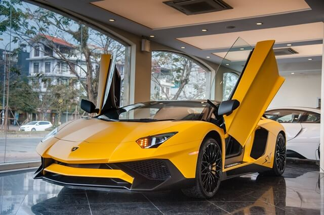

| Stt |
Car name |
Picture |
Information |
Price |
| 1 |
Lamborghini Aventador SVJ |
 |
Xe được trang bị bộ vành đa chấu kích thước 20 inch ở phía trước và 21 inch cho phía sau,
sử dụng hệ thống phanh gốm carbon hiệu suất cao cùng cùm phanh màu cam tương phản.
Ra mắt hồi tháng 8/2018, Aventador SVJ là phiên bản nâng cấp từ Aventador SV LP750-4.
Aventador SVJ được trang bị khối động cơ V12 hút khí tự nhiên, dung tích 6.5L, sản sinh công suất 770 mã lực và mô-men xoắn 720 Nm.
Trọng lượng khô của xe giảm xuống còn 1.525 kg.Aventador SVJ có thể tăng tốc 0-100 km/h chỉ trong 2,8 giây, tốc độ tối đa trên 350 km/h.
So với Aventador SV, SVJ cải thiện 40% lực nén xuống mặt đường nhờ vào hệ thống khí động học chủ động Aerodinamica Lamborghini Attiva (ALA) thế hệ mới, còn được gọi là ALA 2.0 (ALA 1.0 từng được trang bị trên Huracan Performante).
Hệ thống treo thiết kế mới với thanh chống lật được cải thiện 50% và lực giảm chấn cao hơn 15%.
Aventador SVJ cũng có tính năng lái cả hai bánh sau (LRS) và trang bị hệ dẫn động bốn bánh, sử dụng hộp số ISR 7 cấp được tinh chỉnh.
|
520.000 USD |
| 2 |
Lamborghini Aventador LP700-4 |
 |
Aventador LP 700-4 sử dụng động cơ 12 xylanh V12 mới của Lamborghini với dung tích 6.5 lít và công suất 700PS (515 kW / 690 mã lực).
Đây là động cơ V12 hoàn toàn mới đầu tiên kể từ khối động cơ 3.5 lít của chiếc Lamborghini 350GT.
Nhờ trọng lượng chỉ 1,575 kg, mức cực kỳ thấp đối với loại xe này, tỷ lệ trọng lượng so với công suất 2,25 kg/mã lực. |
393.695 USD |
| 3 |
Lamborghini Aventador LP750-SV |
 |
Aventador LP750-4 Super Veloce được giới thiệu vào tháng 3/2015 tại Geneva Motor Show.
Siêu xe này có hệ thống truyền động được nâng cấp, công suất động cơ cũng tăng từ 700 lên 750 mã lực.
Mô-men xoắn cực đại 690 Nm tại tua máy 5.500 vòng/phút.
Trọng lượng giảm 50 kg nhờ sử dụng sợi carbon cả bên trong và ngoài xe.
LP750-4 SV có tỷ lệ công suất/trọng lượng đạt 1 mã lực/2 kg. |
1,5 triệu USD |
| 4 |
Lamborghini Aventador S |
|
Phần đuôi xe cũng được thiết kế lại với những khe khuếch tán lớn hơn. Đặc biệt, đường ra ống xả của Aventador S giảm còn 3, thay vì 4 đường như phiên bản Aventador tiêu chuẩn.
cản trước mới của Aventador S giúp tăng lực ép lên 130% và tăng độ bám đường thêm 50% so với bản tiêu chuẩn.
Lamborghini Aventador S vẫn sở hữu động cơ hút khí tự nhiên V12 6.5L tương tự bản tiêu chuẩn. Tuy nhiên, động cơ này đã được tinh chỉnh để cho ra thêm 40 mã lực, đạt mức 740 mã lực và mô-men xoắn cực đại 690 Nm. Nhờ sức mạnh mới mà Aventador S còn được gắn với số hiệu LP740-4. |
314.000 USD |